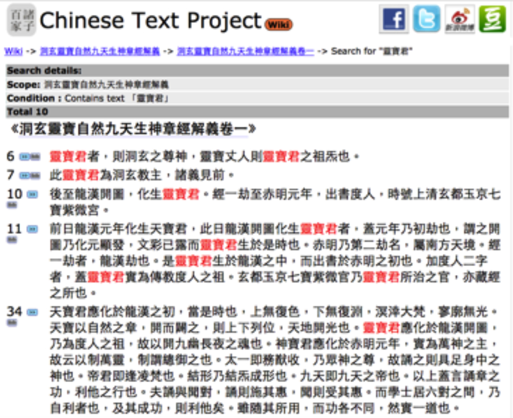
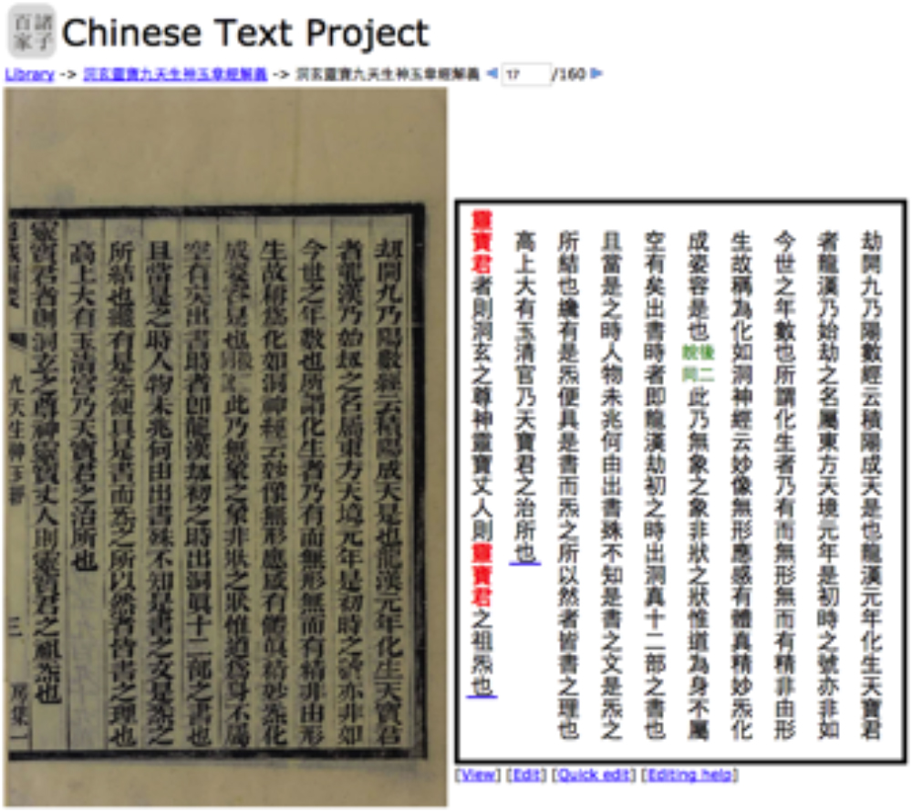

Traditional full-text digital libraries, including those in the field of pre-modern Chinese, have typically followed top-down, centralized, and static models of content creation and curation. In this type of model, written materials are scanned, transcribed by manual effort and/or Optical Character Recognition (OCR), then corrected manually, reviewed, annotated, and finally imported into a system in their final, usable form. This is a natural and well-grounded strategy for design and implementation of such systems, with strong roots in traditional academic publishing models, and offering greatly reduced technical complexity over alternative approaches. This strategy, however, is unable to adequately meet the challenges of increasingly large-scale digitization and the resulting rapid growth in potential corpus size as ever larger volumes of historical materials are digitized by libraries around the world.
The Chinese Text Project (https://ctext.org) is a full-text digital library of pre-modern Chinese written materials which implements an alternative model for creation and curation of full-text materials, adapting methodologies from crowdsourcing projects such as Wikipedia and Distributed Proofreaders (Newby and Franks 2003) while also integrating them with full-text database functionality. In contrast to the traditional linear approach, in which all stages of processing including correction and review must be completed before transcribed material is ingested into a database system, this approach works by immediately ingesting unreviewed materials into a publicly available, managed system, within which these materials can be navigated and used, as well as improved through an ongoing collaborative correction and annotation process. From a user perspective, this has the consequence that the utility of the system does not rest upon prior expert review of materials, but instead derives from provision to individual users of the ability to interact directly and effectively with primary source materials and verify accuracy of transcription and annotation for themselves. Combined with specialized Optical Character Recognition techniques leveraging features common to pre-modern Chinese written works (Sturgeon 2017a), this has enabled the creation of a scalable system providing access to a long tail of historical works which would otherwise not be available in transcribed form. The system is highly scalable and currently contains over 25 million pages of primary source material while being used by over 25,000 users around the world every day.
The most fundamental type of material contained in the Chinese Text Project consists of digital facsimiles of pre-modern published works. These are typically ingested in bulk through collaboration with university libraries which have created high quality digital images of works in their collections. After ingestion, the next step in making these materials more useful to users is creation of approximate transcriptions from page images using OCR. Producing accurate OCR results for historical materials is challenging due to a number of issues, including variation in handwriting and printing styles, varying degrees of contrast between text and paper, bleed-through from reverse sheets, complex and unusual layouts, and physical, water or insect damage to the materials themselves prior to digitization. In addition to these challenges which are common to OCR of historical documents generally, OCR for premodern Chinese works faces additional difficulties in extracting training data due to the large number of distinct character types in the Chinese language. Most OCR techniques apply machine learning to infer from an image of a character which character type it is that the image represents, and these techniques require comprehensive training data in the form of clear and correctly labeled images in the same writing style for every possible character. This is challenging for Chinese due to the large number of character types needed for useful OCR (on the order of 5000); unlike historical OCR of writing systems with much smaller character sets, it is not feasible to simply create this data manually. Instead, training data is extracted through an automated procedure (Sturgeon 2017a) which leverages knowledge about existing transcriptions of other texts to assemble clean labeled character images extracted from historical works for every character to be recognized (Figure 1). Together with image processing and language modeling tailored to pre-modern Chinese, this significantly reduces the error rate in comparison with off-the-shelf OCR software.
Figure 1. OCR training data is extracted automatically from handwritten and block-printed primary source texts.
Once transcriptions of page images have been created, they are directly imported into the public database system. The system represents textual transcriptions as sequences of XML fragments, in which markup is used to express both the relationship between transcribed text and the page image to which it corresponds, as well as the logical structure of the document as a whole. This facilitates two distinct methods of interacting with the transcribed material: firstly, as a single document consisting of the transcribed contents of each page concatenated in sequence to give readable plain-text with logical structure (divisions into chapters, sections, and paragraphs); secondly, as a sequence of page-wise transcriptions, in which a direct visual comparison can be made between the transcription and the image from which it is derived (Figure 2). In both cases, an important contribution of the transcription is that it enables full-text search; the primary utility of the page-wise view is that it enables efficient comparison of transcribed material with the facsimile of the primary source itself. As these two views are linked to one another and created from the same underlying data, this makes it feasible to read and navigate a text according to its logical structure, and at any stage of the process jump to the corresponding location in the sequence of page images to confirm accuracy of the transcription.
 
Figure 2. Full-text search results can be displayed in context in a logical transcription view (left), as well as aligned directly together with the source image in an image and transcription view (right).
As initial transcriptions are created using OCR, they inevitably contain mistakes. Users of the system have the option to correct mistakes they identify, as well as to annotate texts in a number of ways. Two distinct editing interfaces are provided: a direct editor, which enables direct editing of the underlying XML representation, and a visual editor allowing simplified editing of page-level transcriptions, which edits the same underlying content but does not require direct understanding or modification of XML. Regardless of which mechanism is used to submit an edit, all edits are committed immediately to the public system. Edits are versioned, allowing visualization of changes between versions and simple reversion of a text to its state at an earlier point in time. At present, the system receives on the order of 100 edits each day, representing much larger numbers of corrections, as editors frequently choose to correct multiple errors and sometimes entire pages in a single operation.
Further visual editing tools supplement these mechanisms to enable crowdsourcing of more complex information. Illustrations are entered by the user drawing a rectangular box on the page image to indicate the location of the illustration, then filling in a simple form describing various aspects of it (Figure 3). This results in an XML fragment describing the illustration, which can simply be inserted into the text at the appropriate location to represent it. This allows the illustration to be extracted from its context on the page and represented in the full-text transcription view as well as in the page-wise view. It also facilitates illustration search functionality, where illustrations can be searched by caption across all materials contained in the system (Figure 4). A similar visual editing interface is used to enable the inputting of rare and variant characters which do not yet exist in Unicode. These characters are no longer in common use, but occur in many historical documents. The visual editing interface for rare character input also uses metadata provided by the user to identify whether a given character is the same as any existing character known to the system, and if so, assigns a common identifier so that data about these characters can be aggregated, and text containing such characters searched.
Figure 3. Identification and markup of illustrations within source materials are crowdsourced using purpose-designed visual editing tools which convert user input into XML.
Figure 4. Image search: individual images are extracted from (and linked to) the precise locations at which they occur in source materials, and can be searched by caption.
In addition to the main user interface, a web-based Application Programming Interface (API) provides machine-readable access to data and metadata stored in the system. This facilitates text mining applications, as well as integration with other online systems. An example of the latter is the MARKUS textual markup system (De Weerdt et al. 2016), which can use the API to search for texts and load their transcriptions directly into this externally developed and maintained tool. An XML-based plugin system for the Chinese Text Project user interface also enables users to define and share extensions to the web interface which can be used to create connections to external projects and resources. This allows third-party tools such as MARKUS to integrate directly into the web interface, facilitating seamless connections between separately developed online projects. Text mining access is further facilitated by the provision of a Python module capable of accessing the API (Sturgeon 2017c), which is already in use in teaching and research (Sturgeon 2017b).